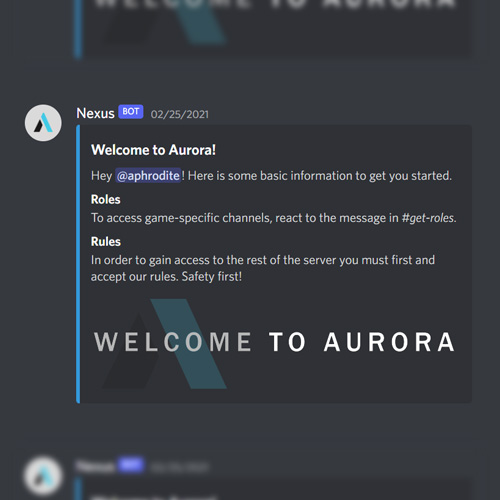
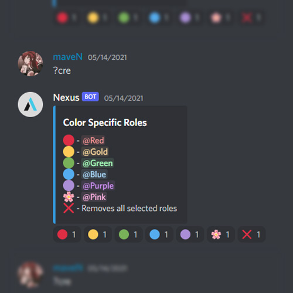
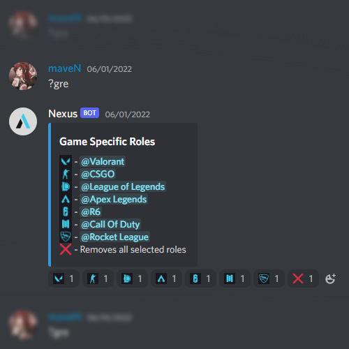
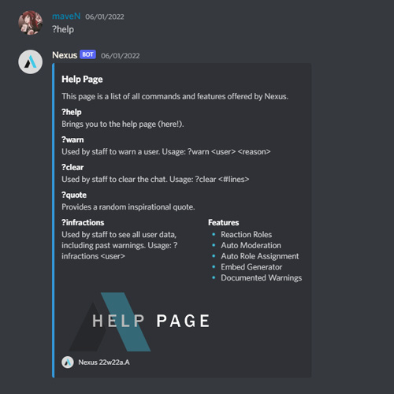
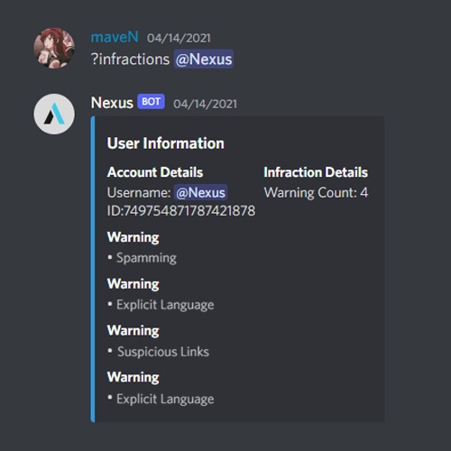
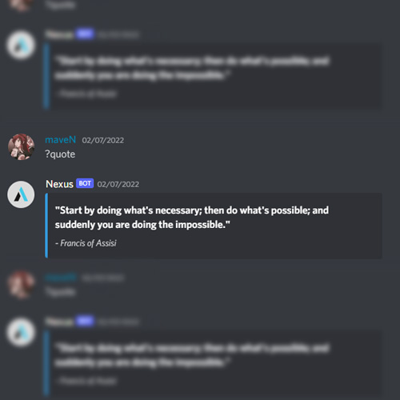

Nexus is a moderation bot applicable in Discord that eases administration-side actions and activities.
This bot reduces the workload on server administrators and moderators. By employing features such as chat filters, embed generators,
and automatic role assignment, admins may simply configure the bot to their liking to make it work efficiently with their server.
This bot is not available for public access, but you may contact me if you are interested in a clone for your own
server
// Features
This bot's features are dedicated towards auto-moderation and administration features.
Chat Filters
Embed Generators
Role Assignment
Infraction & Warning System
Mandated Rule Acceptance
Automatic Invite Link Generation
Chat Clearing
Quote Generator
// Development
This project was my take on a back-end Discord bot. With most bots now-adays being aimed towards user entertainment, I wanted to create a program that would aid the people creating that experience. As such,
I created Nexus, which would aim to lessen the workload of administrators and moderation actions.
I began this project back in April of 2020, but continued adding to it through May of 2022. This was the first Discord bot I ever developed, so I had to learn how the discord.py library worked, as well as Discord bot hosting.
Coming out of it, I feel I learned some really good skills in coding, as well as cloud hosting.
When it came to putting my bot on a server /* Prior to configuring Raspberry Pi hosting */ I utilized services such as Heroku and Repl.it to host my bot.
// Usage
This bot utilizes the prefix ?{message}.
To learn more about the individual commands that this bot offers, run the command ?help.






Made with 🤍 by Logan CalderInspired by iuri.is // Visit Here